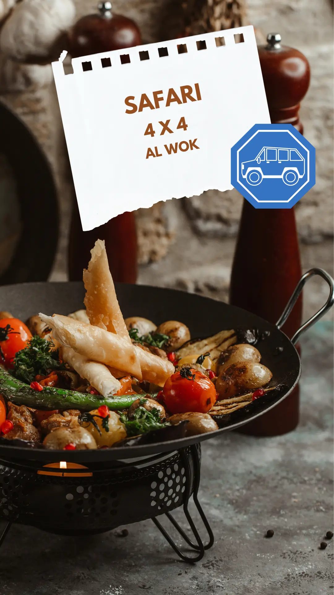
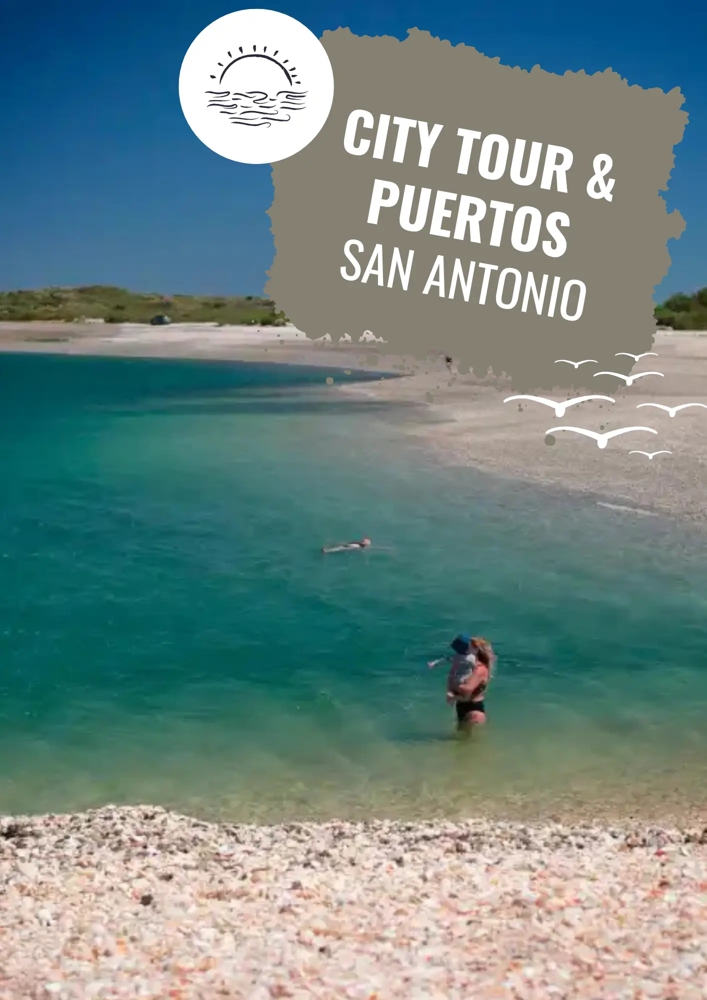

schedule
Duración
5 a 6 Hs
directions_bus
Transporte
Combi A/C
wine_bar
Incluye
Picada
scuba_diving
Actividad
Snorkeling
Aventura, Conocimiento y Playa
Es una excursión corta y económica. Partimos desde Las Grutas hacia el olivar más austral del mundo.
Caribe Patagónico
Visitamos Punta Perdiz y la Playa de las Conchillas. Hacemos snorkeling y disfrutamos de la playa.


backpack Ficha del Explorador
Ropa Sugerida
Traje de baño, sandalias.
Indispensable
Toalla, protector solar.
Políticas de Cancelación y Devolución
1. Clima: No se suspende por clima salvo cancelación de la empresa.
2. Cancelación por la empresa: Se reprograma o se devuelve el 100%.
3. Cancelación del pasajero:
- 72hs antes: 75% reintegro.
- 48hs antes: 50% reintegro.
- 24hs antes: 25% reintegro.
- Menos de 12hs: Sin devolución.
Precio Online
$95.000ARS
Por Adulto
Menores (5-12)$63.750
calendar_monthSalidas Diarias
timer09:00 o 15:00 hs
Reserva directa.